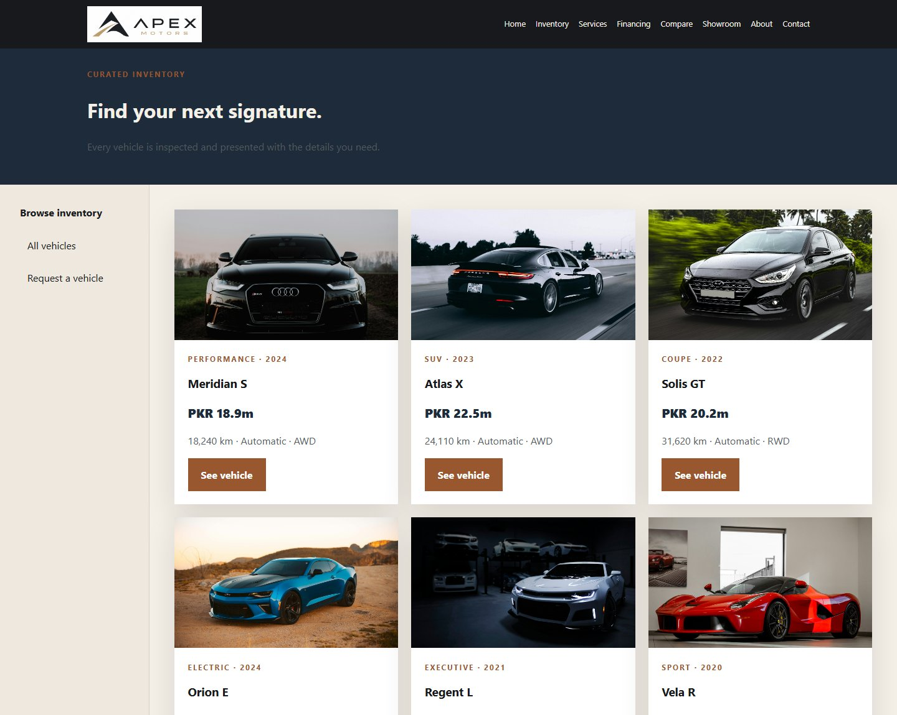
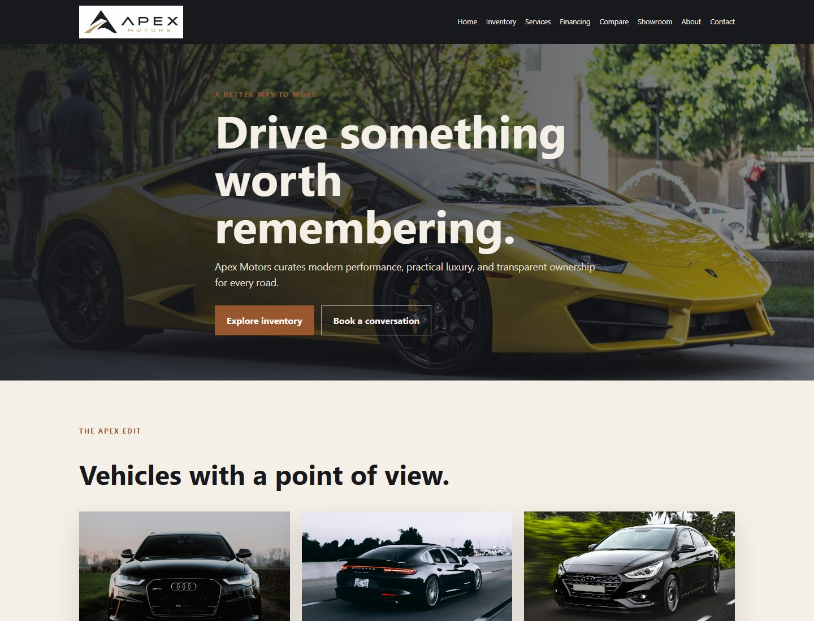
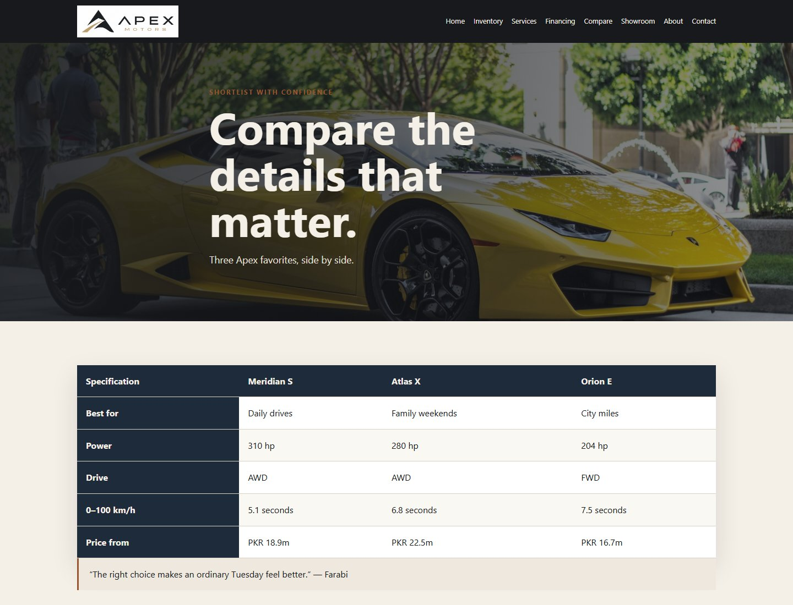
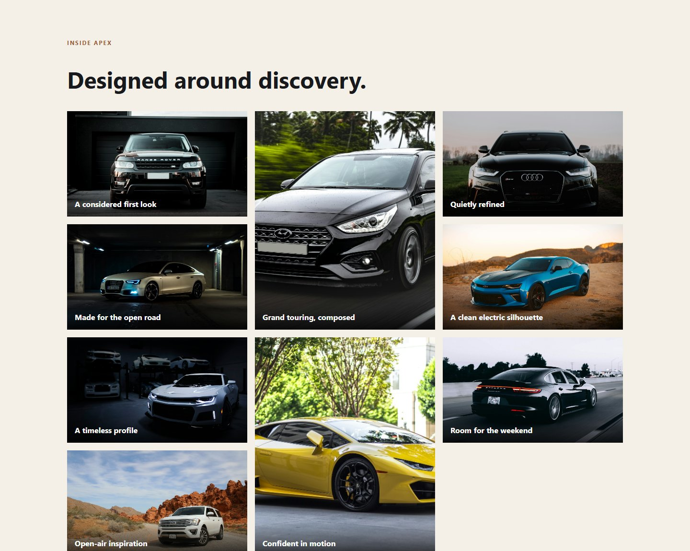

Web technologies · Assignment 2
Space, rhythm
and responsive motion.
A layout-focused development report on the Flexbox and CSS Grid systems that shape the Apex Motors website.

Team: Apex Motors
Group: SE-2507
Members: Arsen · Kuttibay
Members: Farabi · Muhammad
Course: Web Technologies
Build: Framework-free CSS layout
Objective. Extend the connected dealership site with purposeful Flexbox and Grid layouts, responsive behavior at narrower widths, and an image gallery whose captions and hover states support browsing.
01 · Flexible layouts
Use Flexbox where content should flow
Flexbox handles the one-dimensional parts of the site: the brand/navigation row, navigation link wrapping, action groups, and vehicle cards. The same components can redistribute available space without hard-coding a separate layout for every item.
Navigation that can wrap
.nav-wrap uses display: flex, alignment, and spacing to place the brand beside the primary navigation. .main-nav is another flex container; links can wrap when there is not enough horizontal room. At narrower widths the header stacks and navigation aligns to the start.
Vehicle cards with flexible height
The home and inventory card groups use Flexbox for even card distribution. Each card is a column flex container; its content area grows and the action link uses margin-top: auto to line up buttons when descriptions differ in length.
.nav-wrap { display:flex }.main-nav { display:flex }.cards { display:flex }.card-body { flex:1 }
Real page evidence · Inventory
The six inventory entries share one card structure and clear “See vehicle” actions.
Shared site navigation

The same logo and page links appear across the root site's nine pages.
Page responsibility map
| Member | Page lead responsibilities | Layout focus |
|---|
| Farabi | index.html, about.html | Home, shared navigation, team presentation |
| Arsen | inventory.html, vehicle-detail.html | Inventory cards and vehicle details |
| Kuttibay | financing.html, contact.html | Customer information and inquiry layout |
| Muhammad | services.html, compare.html, showroom.html | Grid areas, comparison table, gallery |
Page leads follow the team's documented Apex Motors/A3 responsibility map; shared layout and integration are team work.
02 · Grid-based composition
Grid for page regions and gallery
CSS Grid handles the two-dimensional layouts that need clear rows and columns. The inventory shell names its page areas explicitly, while the showroom gallery uses a three-column image grid with selected images spanning two rows.
Named layout areas
The shared .page-shell names its header, sidebar, and primary content areas explicitly:
grid-template-areas:
'head head'
'side main'
'foot foot';
The desktop template reserves a foot row; the site footer itself follows the shell in document flow. The sidebar occupies a 240px column. At the 900px breakpoint the shell changes to one column and places the sidebar after the main content.
Showroom image gallery
.gallery creates three equal columns and consistent image rows. Figure elements position captions over their images; the second and seventh images span two grid rows to introduce a deliberate visual rhythm.
repeat(3, 1fr)grid-auto-rows: 220pxgrid-row: span 2
Real page evidence · Compare

The table is contained in a scrollable wrapper so wide comparison columns remain usable on small screens.
Gallery structure
Each showroom figure groups an image with a caption, keeping the label associated with the correct vehicle. The grid gives the collection a magazine-like mosaic rather than forcing every photograph into a uniform list.

Captured from the live-rendered root Showroom page; local vehicle images and caption overlays form the gallery experience.
03 · Responsive rules and interaction
Adapt the composition to the screen
Responsive behavior is implemented in the shared root stylesheet with breakpoints at max-width: 900px and max-width: 620px. The rules change layout structure rather than hiding page content.
Responsive layout changes
- At 900px, stack the brand and navigation, switch the inventory shell to one column, reduce the inventory grid from three columns to two, and stack split/form layouts.
- At 620px, stack home cards, reduce the inventory and showroom galleries to one column, simplify the footer/form/stat grids, and tighten section spacing.
- Remove the showroom's two-row image spans on narrow screens so a single-column gallery has a natural reading order.
- Keep the compare table inside an overflow wrapper; users can scroll its minimum-width data instead of losing specification columns.
Hover captions and image feedback
Each <figure> in the showroom contains a caption. On hover the image scales slightly and dims; the caption remains over a dark gradient for readable contrast. The same gallery content is present without hover, so captions are not the only way to identify a vehicle.
.gallery figure:hover img applies the visual change. .gallery figcaption anchors text at the bottom of each figure.
Real page evidence · Gallery
Additional interaction and accessibility details
Navigation and buttons use hover and visible keyboard-focus styles; cards provide a subtle lift; the gallery uses meaningful image alternatives; and the shared CSS reduces motion when the visitor requests it. These small behaviors reinforce the layout without changing the underlying page content.
04 · Rubric walkthrough and reflection
Assignment 2, step by step
- Reuse the A1 content foundation. Preserve the shared HTML pages, navigation, imagery, and external stylesheet while enhancing layout behavior.
- Apply Flexbox to one-dimensional groups. Align the header/brand/navigation, allow nav links to wrap, distribute card rows, and keep card actions aligned.
- Use CSS Grid for region-based layouts. Name the inventory shell's header/sidebar/main/footer areas and define the gallery as a multi-row, three-column composition.
- Build the image mosaic. Group every vehicle image and caption in a figure; selectively span images across rows to vary the gallery rhythm.
- Set responsive breakpoints. Reflow navigation, cards, shell, gallery, forms, and footer at 900px and 620px while preserving content.
- Add visual interaction states. Use hover transitions for image captions, cards, and actions while retaining captions and accessible focus states in the layout.
- Review the final site in context. Confirm page links and shared layout patterns remain coherent across all nine pages and both desktop and narrow-screen rules.
Final reflection
Assignment 2 made layout choices more intentional. Flexbox worked well for navigation and card content that needs to flow and align, while Grid made the inventory shell and image gallery easier to reason about as rows and columns. The most useful learning was that responsive design is not just shrinking a desktop page: the navigation, card groups, sidebars, gallery spans, and table all need considered behavior at different widths. Keeping the page content intact while changing its composition made the website more coherent and easier to extend.
Published root website
https://vertex-blip.github.io/Car-dealership-website/
This report documents the framework-free root project. The separately published Bootstrap Assignment 3 project is not part of the root site.
Apex Motors · Group SE-2507 · Arsen · Kuttibay · Farabi · Muhammad